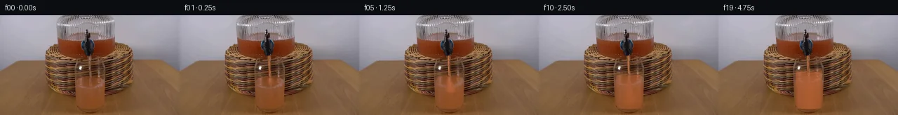

![首帧]()

Round 00
2026-11-05T03:13:18.705256+00:00像素候选变化代码 +325/−0inspection 更新
pixels a6616ad2eff00434 · code f03df32cf02dbf56
查看本轮 generate.py 真实 diff
--- previous/generate.py
+++ current/generate.py
@@ -0,0 +1,325 @@
+#!/usr/bin/env python3
+"""Deterministic source-image continuation with analytic, supersampled liquid layers.
+Only first_frame.png supplies appearance. No renderer, model, or external assets.
+"""
+from pathlib import Path
+import base64
+import json
+import math
+import re
+
+import numpy as np
+from PIL import Image, ImageDraw
+from scipy.ndimage import map_coordinates, gaussian_filter
+
+from artifact_io import save
+
+ROOT = Path(__file__).resolve().parent
+SS = 4
+W, H, N = 256, 144, 20
+FPS = 4
+SOURCE = np.asarray(Image.open(ROOT / 'first_frame.png').convert('RGB'), dtype=np.uint8)
+assert SOURCE.shape == (H, W, 3)
+SRC = SOURCE.astype(np.float32)
+Y, X = np.mgrid[0:H*SS, 0:W*SS].astype(np.float32)
+X = (X + .5) / SS - .5
+Y = (Y + .5) / SS - .5
+
+
+def smooth(a, b, v):
+ z = np.clip((v-a)/(b-a), 0, 1)
+ return z*z*(3-2*z)
+
+
+def sample(px, py):
+ return np.stack([map_coordinates(SRC[..., c], [py, px], order=1,
+ mode='nearest', prefilter=False)
+ for c in range(3)], axis=-1)
+
+
+BASE = sample(X, Y)
+# The immutable source supplies bright glass reflections, too.
+REFLECTION = np.maximum(SRC - gaussian_filter(SRC, sigma=(0, 1.4, 0)), 0)
+REFL = np.stack([map_coordinates(REFLECTION[..., c], [Y, X], order=1,
+ mode='nearest', prefilter=False)
+ for c in range(3)], axis=-1)
+
+CX = 128.6
+RADIUS = 19.25 - .016 * (Y - 77)
+U = (X-CX) / RADIUS
+SIDE = 1-smooth(.965, 1.025, np.abs(U))
+BOTTOM = 132.8 + 2.15*np.sqrt(np.maximum(0, 1-((X-CX)/18.05)**2))
+SIDE *= 1-smooth(BOTTOM-.3, BOTTOM+.4, Y)
+SIDE *= smooth(74, 76, Y)
+GLASS_HIGHLIGHT = np.maximum(
+ np.exp(-((X-113.6)/1.8)**2), np.exp(-((X-145.3)/1.7)**2))
+# Extra protection is applied only to source highlights, not a painted stripe.
+SPEC_PROTECT = np.clip((REFL.mean(axis=2)-5)/26, 0, .75)*GLASS_HIGHLIGHT
+
+INITIAL_LEVEL = 87.4
+RATE_PX_S = 1.85
+GLASS_PX_CM = 6.2
+RESERVOIR_PX_CM = 4.4
+GLASS_RADIUS_CM = 18.95 / GLASS_PX_CM
+RESERVOIR_RADIUS_CM = 39.4 / RESERVOIR_PX_CM
+ML_PER_PX = math.pi*GLASS_RADIUS_CM**2 / GLASS_PX_CM
+INITIAL_ML = (133.0-INITIAL_LEVEL)*ML_PER_PX
+
+
+def compose(img, color, alpha):
+ alpha = np.clip(alpha, 0, 1)[..., None]
+ return img*(1-alpha) + np.asarray(color, dtype=np.float32)*alpha
+
+
+def state(t):
+ # Tap ramp integral gives a constant flow after the first fraction of a second.
+ integral = t - .10*(1-math.exp(-t/.10))
+ rise = RATE_PX_S*integral
+ level = INITIAL_LEVEL-rise
+ added_ml = rise*ML_PER_PX
+ drop = added_ml/(math.pi*RESERVOIR_RADIUS_CM**2)*RESERVOIR_PX_CM
+ return level, rise, added_ml, drop
+
+
+def reservoir(img, drop):
+ u = (X-122.9)/39.4
+ edge = 32.4 + 4.5*np.sqrt(np.maximum(0, 1-u*u))
+ local = smooth(82.5, 84.0, X)*(1-smooth(160.0, 161.5, X))
… diff truncated; 238 more lines …